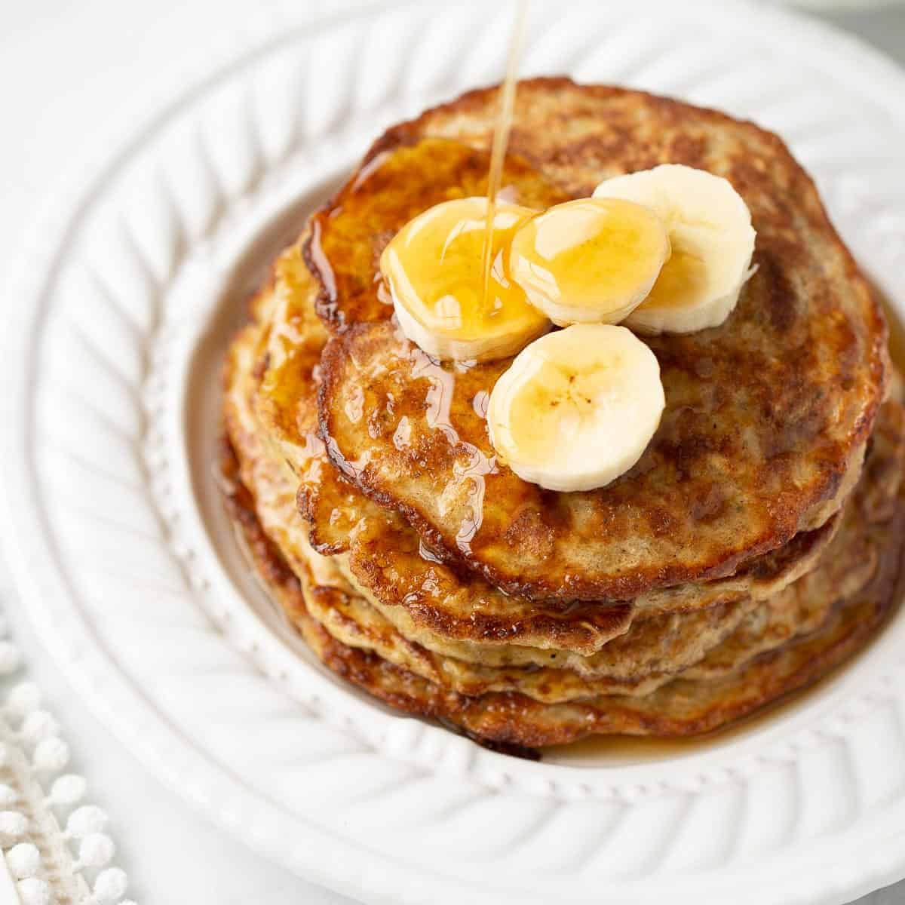

Banana Pancakes

Description
These banana pancakes are a staple at my house. My kids and my wife love them. These are completely customizable and can be made to your own tastes. I will just give a blueprint on how to start.
The basic ingredients of the pancake are bananas, eggs, oatmeal, and some flour. I typically will use 3 very ripe bananas. The more ripe the banana is, the sweeter the pancakes will be. I tend to make sure the bananas are just beginning to brown, not completely brown.
Ingredients
- 3 ripe bananas
- 3 eggs
- 1/3 cup rolled oats
- pinch of salt
- pinch of cinammon
- few drops of vanilla (optional)
- chocolate chips or sprinkles (optional)
Steps
- Step 1: Mash the bananas in a bowl.
- Step 2: Mix in eggs and oats and combine.
- Step 3: add in pinch of salt and cinnamon to taste.
- Step 4: Get frying pan ready over medium heat with a little oil covering bottom of pan.
- Step 5: Add a spoon full of batter to frying pan. Depending on size of pan, you might be able to fit a few at a time.
- Step 6: At this part you can add your chocolate chips or sprinkles to the pancakes on the pan.
- Step 7: Be ready to flip the pancake when you notice little bubble around the edges.
- Step 8: Flip the pancake and wait for the other side to finish, about 1-2 more minutes.
- Step 9: Take them off the pan and repeat with the remaining batter. Eat with more sliced bananas and maple syrup. Enjoy!